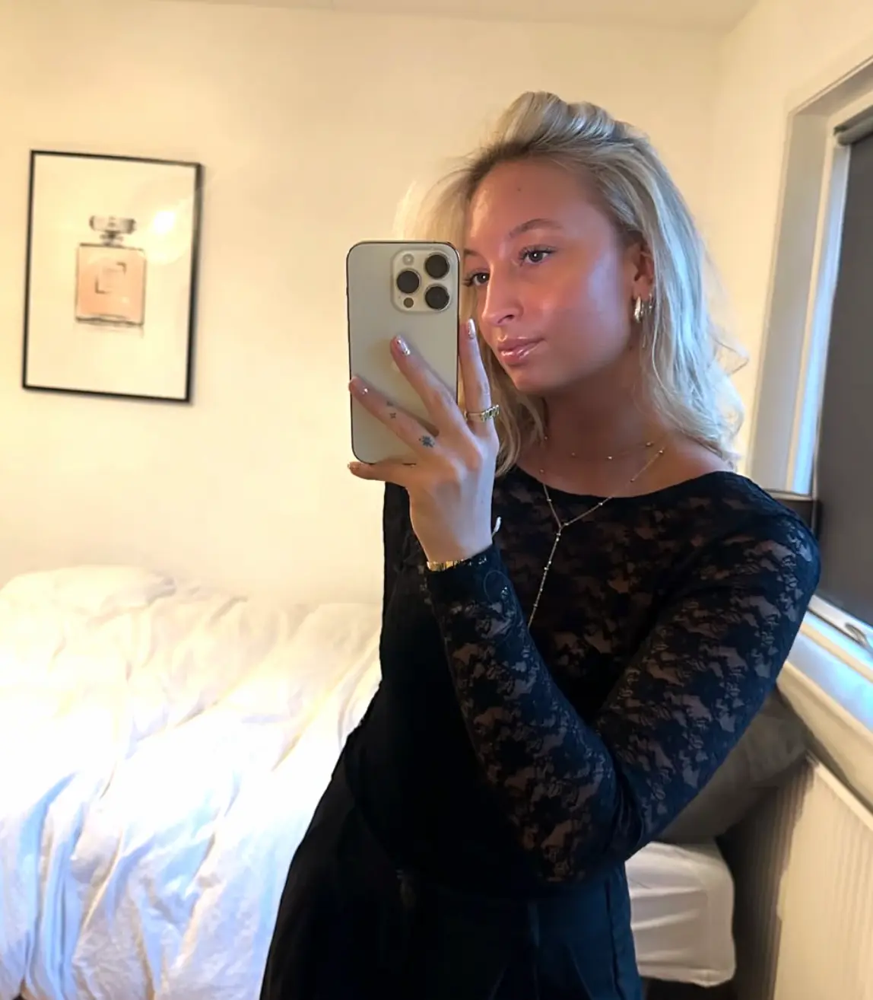

Lad os skabe noget sammen
Måske er dette begyndelsen på
et nyt samarbejde.
Tak fordi du har taget dig tid til at udforske min portfolio. Hvis du ønsker at høre mere om mig, mine projekter eller mangler en til praktik, et studiejob eller samarbejde, er du meget velkommen til at kontakte mig.
Jeg glæder mig til at høre fra dig ♡
